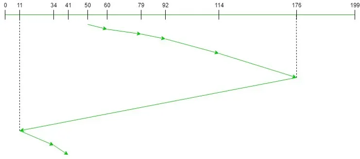
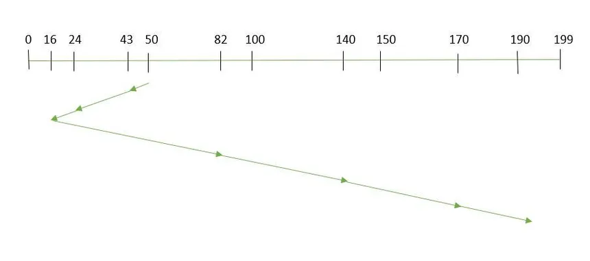
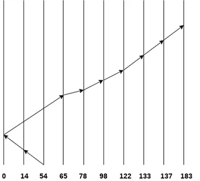
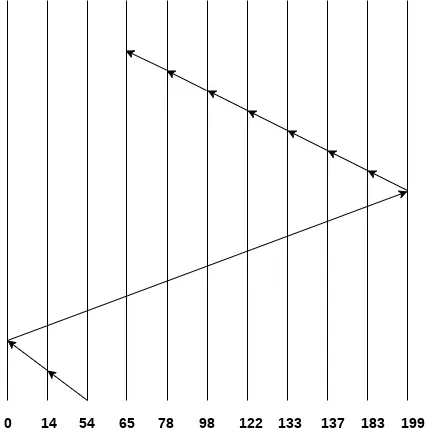
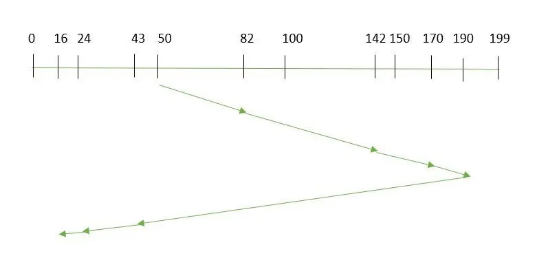
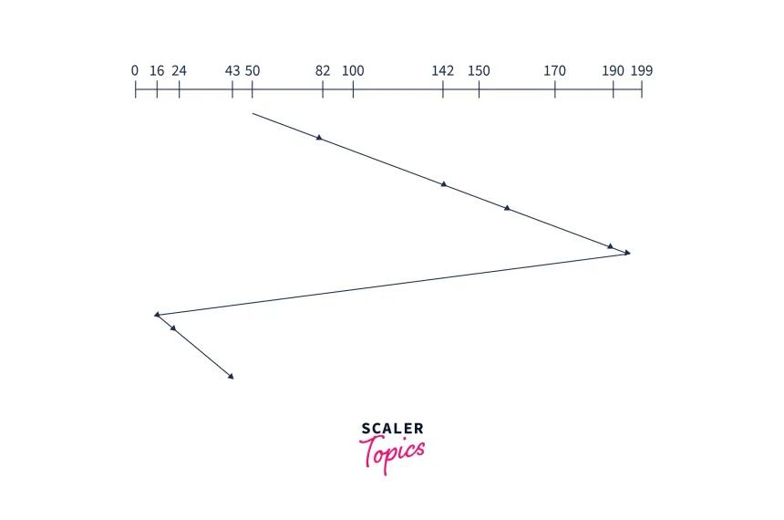

First Come First Serve (FCFS)
FCFS is the simplest disk scheduling algorithm. It processes requests in the order they arrive, without any optimization.
Characteristics
- Simple to implement
- No starvation
- May result in high average seek time
- No optimization for disk head movement
Visual Example

Shortest Seek Time First (SSTF)
SSTF selects the request with the minimum seek time from the current head position.
Characteristics
- Minimizes average seek time
- May cause starvation
- Better performance than FCFS
- More complex to implement
Visual Example

SCAN (Elevator Algorithm)
SCAN algorithm moves the disk head in one direction until it reaches the end, then reverses direction.
Characteristics
- Uniform wait time
- Better response time than FCFS
- May have high response time
- No starvation
Visual Example

C-SCAN (Circular SCAN)
C-SCAN moves the head to the end of the disk, then jumps to the beginning without servicing requests on the return.
Characteristics
- Better response time than SCAN
- More uniform wait time
- May have higher seek time
- No starvation
Visual Example

LOOK
LOOK is similar to SCAN but only goes as far as the last request in each direction.
Characteristics
- More efficient than SCAN
- Better response time
- Reduces unnecessary movement
- No starvation
Visual Example

C-LOOK (Circular LOOK)
C-LOOK is similar to C-SCAN but only goes as far as the last request in each direction.
Characteristics
- Most efficient among all algorithms
- Best response time
- Minimal unnecessary movement
- No starvation
Visual Example

Algorithm Comparison
| Algorithm | Complexity | Average Seek Time | Fairness | Starvation | Best For |
|---|---|---|---|---|---|
| FCFS | Low | High | High | None | Light workloads |
| SSTF | Medium | Medium | Low | Possible | Random I/O intensive workloads |
| SCAN | Medium | Medium | Medium | Limited | Mixed workloads |
| C-SCAN | Medium | Medium | High | Limited | Uniform distributed workloads |
| LOOK | Medium | Low | Medium | Limited | Optimizing SCAN |
| C-LOOK | High | Low | High | Limited | High throughput systems |
Selection Guidelines
- For simplicity: Use FCFS
- For minimizing seek time: Use SSTF, LOOK, or C-LOOK
- For fairness and performance: Use SCAN or C-SCAN
- For high-throughput systems: Use C-LOOK
- For real-time systems: Use deadline-based scheduling (not covered)